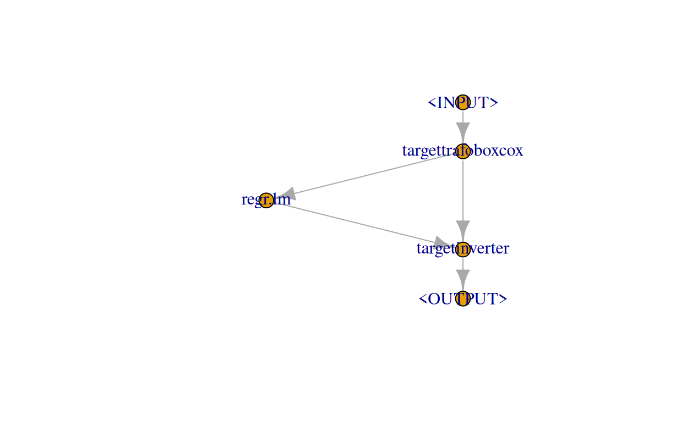

FIXME: links, hyperrefs, style, spaces in R code chunks
Transforming the target variable often can lead to predictive improvement and is a widely used tool. Typical transformations are for example the \(\log\) transformation of the target aiming at minimizing (right) skewness or the Box Cox and Yeo-Johnson transformations being more flexible but having a similar goal.
One option to perform, e.g., a \(\log\) transformation would be to manually transform the target prior to training a Learner (or predicting from it) and then manually invert this transformation via \(\exp\) after predicting from the Learner. This is quite cumbersome. Especially if the transformation and inverse transformation require information about both the training and prediction data.
In this use case, we show how to do various kinds of target transformations using mlr3pipelines and explain the design of the transformation and inversion PipeOps.
You will:
learn how to do simple target transformations using PipeOpTargetTrafoSimple
be introduced to the abstract base class to implement custom target transformations, PipeOpTargetTrafo
implement a custom target transformation PipeOp, PipeOpTargetTrafoBoxCox
As a prerequisite, you should be quite familiar with mlr3pipelines, i.e, know about the $state field of PipeOps, input and output channels, as well as Graphs. We will start with a PipeOp for simple target transformations, PipeOpTargetTrafoSimple.
In all sections we will use the mtcars regression task with mpg being a numerical, positive target:
library(mlr3)
library(mlr3learners)
library(mlr3pipelines)
set.seed(2906)
task = tsk("mtcars")
summary(task$data(cols = task$target_names))
mpg
Min. :10.40
1st Qu.:15.43
Median :19.20
Mean :20.09
3rd Qu.:22.80
Max. :33.90 Moreover, as a Learner we will use an ordinary linear regression learner:
learner_lm = lrn("regr.lm")Simple Target Transformations
The term simple refers to transformations that are given by a function of the target, relying on no other arguments (constants etc. are of course allowed). The most prominent example is given by the \(\log\) transformation which we can later invert by applying the \(\exp\) transformation.
If you are only interested in doing such a transformation and you do not have the time to read more of this post, simply use the following syntactic sugar:
g_ppl = ppl("targettrafo", graph = learner_lm)
g_ppl$param_set$values$targettrafosimple.trafo = function(x) log(x)
g_ppl$param_set$values$targettrafosimple.inverter = function(x) exp(x)This constructs a Graph that will \(\log\) transform the target prior to training the linear regression learner (or predicting from it) and \(\exp\) transform the target after predicting from it. Note that you can supply any other Learner or even a whole Graph as the graph argument.
Now, we will go into more detail about how this actually works:
We can perform a \(\log\) transformation of our numerical, positive target, mpg, using PipeOpTargetTrafoSimple (by default, ppl("targettrafo") uses this transformation PipeOp):
trafo = po("targettrafosimple", param_vals = list(trafo = function(x) log(x)))We have to specify the trafo parameter as a function of x (which will internally be evaluated to be the target of the task): trafo = function(x) log(x)). In principle, this is all that is needed to transform the target prior to training a Learner (or predicting from it), i.e., if we now train this PipeOp, wee see that the target is transformed as specified:
trafo$train(list(task))$output$data(cols = task$target_names)
mpg
1: 3.044522
2: 3.044522
3: 3.126761
4: 3.063391
5: 2.928524
6: 2.895912
7: 2.660260
8: 3.194583
9: 3.126761
10: 2.954910
11: 2.879198
12: 2.797281
13: 2.850707
14: 2.721295
15: 2.341806
16: 2.341806
17: 2.687847
18: 3.478158
19: 3.414443
20: 3.523415
21: 3.068053
22: 2.740840
23: 2.721295
24: 2.587764
25: 2.954910
26: 3.306887
27: 3.258097
28: 3.414443
29: 2.760010
30: 2.980619
31: 2.708050
32: 3.063391
mpgAfter having predicted from the Learner we could then proceed to apply the inverse transformation function in a similar manner. However, in mlr3pipelines, we decided to go with a more unified design of handling target transformations. In all target transformation PipeOps also the inverse transformation function of the target has to be specified. Therefore, in PipeOpTargetTrafoSimple, the parameter inverter also has to be correctly specified, i.e.:
trafo$param_set$values$inverter = function(x) exp(x)To actually carry out the inverse transformation function after predicting from the Learner, we then rely on PipeOpTargetInverter. PipeOpTargetInverter has an empty ParamSet and its sole purpose is to apply the inverse transformation function after having predicted from a Learner (note that this whole design of target transformations may seem somewhat over-engineered, however, we will learn of its advantages when we later move to the advanced section).
PipeOpTargetInverter has two input channels named "fun" and "prediction". During training, both take NULL as input (because this is what a Learner’s "output" output and PipeOpTargetTrafoSimple’s "fun" output will return during training). During prediction, the "prediction" input takes a prediction, and the "fun" input takes the "fun" output from PipeOpTargetTrafoSimple (you may have noticed already, that PipeOpTargetTrafoSimple has actually two outputs, "fun" and "output", with "fun" returning NULL during training and a function during prediction, while "output" always returns the transformed input task). We can see this, if we look at:
trafo$output
name train predict
1: fun NULL function
2: output Task Task
trafo$predict(list(task))
$fun
function(inputs) {
assert_list(inputs, len = 1L, types = "Prediction")
self$inverter(inputs[[1L]], predict_phase_control)
}
<environment: 0x564ddc86df30>
$output
<TaskRegr:mtcars> (32 x 11)
* Target: mpg
* Properties: -
* Features (10):
- dbl (10): am, carb, cyl, disp, drat, gear, hp, qsec, vs, wtTo finally construct our transformation pipeline, we build a Graph:
g = Graph$new()
g$add_pipeop(trafo)
g$add_pipeop(learner_lm)
g$add_pipeop(po("targetinverter"))Manually connecting the edges is quite cumbersome. First we connect the "output" output of "targettrafosimple" to the "input" input of "regr.lm":
g$add_edge(src_id = "targettrafosimple", dst_id = "regr.lm",
src_channel = 2, dst_channel = 1)Then we connect the "output" output of "regr.lm" to the "prediction" input of "targetinverter":
g$add_edge(src_id = "regr.lm", dst_id = "targetinverter",
src_channel = 1, dst_channel = 2)Finally, we connect the "fun" output of "targettrafosimple" to the "fun" input of "targetinverter":
g$add_edge(src_id = "targettrafosimple", dst_id = "targetinverter",
src_channel = 1, dst_channel = 1)The Graph (which is conceptually the same graph as constructed via the ppl("targettrafo") syntactic sugar above) looks like the following:
g$plot()
We can then finally call $train() and $predict() (prior to this we wrap the Graph in a GraphLearner and here we do have to set the task_type manually, because PipeOpTargetInverter does not expose its prediction type):
gl = GraphLearner$new(g, task_type = "regr")
gl$train(task)
gl$state
$model
$model$targettrafosimple
list()
$model$regr.lm
$model$regr.lm$model
Call:
stats::lm(formula = task$formula(), data = task$data())
Coefficients:
(Intercept) am carb cyl disp drat
2.776e+00 4.738e-02 -2.012e-02 7.657e-03 4.989e-05 2.220e-02
gear hp qsec vs wt
5.925e-02 -8.964e-04 3.077e-02 -2.874e-03 -1.723e-01
$model$regr.lm$log
Empty data.table (0 rows and 3 cols): stage,class,msg
$model$regr.lm$train_time
[1] 0.009
$model$regr.lm$train_task
<TaskRegr:mtcars> (0 x 11)
* Target: mpg
* Properties: -
* Features (10):
- dbl (10): am, carb, cyl, disp, drat, gear, hp, qsec, vs, wt
$model$targetinverter
list()
$log
Empty data.table (0 rows and 3 cols): stage,class,msg
$train_time
[1] 0.067
$train_task
<TaskRegr:mtcars> (0 x 11)
* Target: mpg
* Properties: -
* Features (10):
- dbl (10): am, carb, cyl, disp, drat, gear, hp, qsec, vs, wt
gl$predict(task)
<PredictionRegr> for 32 observations:
row_id truth response
1 21.0 21.67976
2 21.0 21.10831
3 22.8 25.73690
---
30 19.7 19.58533
31 15.0 14.11015
32 21.4 23.11105and contrast this with $train() and $predict() of the linear regression learner (also look at the estimated coefficients of the linear regression contained in the $state):
learner_lm$train(task)
learner_lm$state
$model
Call:
stats::lm(formula = task$formula(), data = task$data())
Coefficients:
(Intercept) am carb cyl disp drat
12.30337 2.52023 -0.19942 -0.11144 0.01334 0.78711
gear hp qsec vs wt
0.65541 -0.02148 0.82104 0.31776 -3.71530
$log
Empty data.table (0 rows and 3 cols): stage,class,msg
$train_time
[1] 0.004
$train_task
<TaskRegr:mtcars> (0 x 11)
* Target: mpg
* Properties: -
* Features (10):
- dbl (10): am, carb, cyl, disp, drat, gear, hp, qsec, vs, wt
learner_lm$predict(task)
<PredictionRegr> for 32 observations:
row_id truth response
1 21.0 22.59951
2 21.0 22.11189
3 22.8 26.25064
---
30 19.7 19.69383
31 15.0 13.94112
32 21.4 24.36827You should continue reading, if you are interested in more advanced target transformations, i.e., where the transformation and inverse transformation require information about both the training and prediction data.
First we will introduce the abstract base class for doing target transformations, PipeOpTargetTrafo, from which PipeOpTargetTrafoSimple inherits.
Abstract Base Class
No matter how “complicated” the actual target transformation and inverse transformation may be, applying the inverse transformation function after having predicted from a Learner will always be done via PipeOpTargetInverter (as already outlined above, PipeOpTargetInverter has an empty ParamSet and its sole purpose is to apply the inverse transformation function after having predicted from a Learner). All Graphs for doing target transformations will therefore look similar like the simple one above, i.e., a target transformation PipeOp followed by some Learner or a whole Graph, followed by PipeOpTargetInverter. Therefore, using ppl("targettrafo") to construct such Graphs is highly recommended.
To allow for more advanced target transformations, we now have a closer look at the abstract base class, PipeOpTargetTrafo:
PipeOpTargetTrafo has one input channel, named "input" taking a task both during training and prediction. It’s two output channels are named "fun" and "output". During training "fun" returns NULL and during prediction "fun" returns a function that will be used by PipeOpTargetInverter to perform the inverse target transformation based on PipeOpTargetInverter’s "prediction" input. "output" returns the modified input task.
Inherited classes should overload four functions:
set_state()takes the input task and returns alist()which will internally be used to set the$state. Typically it is sensible to make use of the$stateduringtrain_target()andtrain_invert()train_target()takes the input task and returns a modified task (i.e., the task with the transformed target). This is the main function for doing the actual target transformation. Note thatset_state()is evaluated a single time during training right beforetrain_target()and therefore, you can rely on the$statethat has been set. To update the input task with respect to the transformed target, inheritances should make use of the private$.update_target()function which itself will callconvert_task()and drop the original target from the task.train_invert()takes the input task and returns apredict_phase_controlobject. This can be anything. Note thattrain_invert()should not modify the input task.inverter()takes a prediction and apredict_phase_controlobject as inputs and returns a prediction. This is the main function for specifying the actual inverse target transformation that will later be carried out by PipeOpTargetInverter. Internally a private helper function will construct the function that will be returned by the"fun"output of PipeOpTargetTrafo so that PipeOpTargetInverter can later simply dispatch this inverse target transformation on its"prediction"input.
The supposed workflow of a class inherited from PipeOpTargetTrafo is given in the following figure:

To solidify our understanding we will design a new target transformation PipeOp in the next section: PipeOpTargetTrafoBoxCox
Hands on: PipeOpTargetTrafoBoxCox
The Box-Cox transformation is given as FIXME
mlr3pipelines already supports the Box-Cox transformation for numerical, positive features, see ?PipeOpBoxCox.
Here we will design a PipeOp to apply the Box-Cox transformation as a target transformation. The \(\lambda\) parameter of the transformation is estimated during training and used for both training and prediction transformation. After predicting from a Learner we will as always apply the inverse transformation function. To do the actual transformation we will use bestNormalize::boxcox().
First, we inherit from PipeOpTargetTrafo and overload the initialize() function:
PipeOpTargetTrafoBoxCox = R6Class("PipeOpTargetTrafoBoxCox",
inherit = PipeOpTargetTrafo,
public = list(
initialize = function(id = "targettrafoboxcox", param_vals = list()) {
ps = ParamSet$new(params = list(
ParamLgl$new("standardize", default = TRUE, tags = c("train", "boxcox")),
ParamDbl$new("eps", default = 0.001, lower = 0, tags = c("train", "boxcox")),
ParamDbl$new("lower", default = -1L, tags = c("train", "boxcox")),
ParamDbl$new("upper", default = 2L, tags = c("train", "boxcox"))
))
super$initialize(id = id, param_set = ps, param_vals = param_vals, packages = "bestNormalize")
},As parameters, we allow "standardize" (whether to center and scale the transformed values to attempt a standard normal distribution), "eps" (tolerance parameter to identify if the \(\lambda\) parameter is equal to zero), "lower" (lower value for the estimation of the \(\lambda\) parameter) and "upper" (upper value for the estimation of the \(\lambda\) parameter).
Second, we overload the four functions as mentioned above.
We start with set_state():
set_state = function(task) {
assert_r6(task, classes = "TaskRegr")
target = task$data(cols = task$target_names)[[1L]]
bc = invoke(bestNormalize::boxcox, target, .args = self$param_set$get_values(tags = "boxcox"))
bc$x.t = NULL
bc$x = NULL
list(bc = bc)
},We assert that the input task is of class TaskRegr and apply the Box-Cox transformation to the target. This yields an object of class "boxcox" which we will wrap in a list() and set as the $state (bc$x.t = NULL and bc$x = NULL is done to save some memory because we do not need the transformed original data and original data here).
Next, we tackle train_target():
train_target = function(task) {
target = task$data(cols = task$target_names)[[1L]]
new_target = as.data.table(predict(self$state$bc, newdata = target))
colnames(new_target) = paste0(task$target_names, ".bc")
task$cbind(new_target)
private$.update_target(task, new_target = colnames(new_target))
},This is quite straightforward, because objects of class "boxcox" have their own predict method which we can use here to carry out the actual Box-Cox transformation based on the learned \(\lambda\) parameter as stored in the "boxcox" object in the $state (both during training and prediction). We then rename the target, add it to the task and finally update the task with respect to this new target.
Time to overload train_invert():
This is even more straightforward, because the prediction method for objects of class "boxcox" directly allows for inverting the transformation via setting the argument inverse = TRUE. Therefore, we only need the "boxcox" object stored in the $state.
train_invert = function(task) {
self$state$bc
},Finally, we overload inverter():
inverter = function(prediction, predict_phase_control) {
assert_r6(prediction, classes = "PredictionRegr")
type = prediction$task_type
truth = prediction$truth
response = prediction$response
truth = predict(predict_phase_control, newdata = truth, inverse = TRUE)
response = predict(predict_phase_control, newdata = response, inverse = TRUE)
get(mlr_reflections$task_types[type]$prediction)$new(row_ids = prediction$row_ids, truth = truth, response = response)
}
)
)We assert that the input prediction is of class PredictionRegr and extract the truth and the response from the prediction. We then apply the inverse Box-Cox transformation to both the truth and the response based on the \(\lambda\) parameter and the mean and standard deviation learned during training, relying on the predict_phase_control object (which we specified while overloading train_invert(), i.e., this is just the "boxcox" object stored in the $state). Finally, we construct a new prediction object.
To construct our final target transformation Graph with our linear regression learner, we again simply make use of ppl("targettrafo"):
g_bc = ppl("targettrafo", graph = learner_lm, trafo_pipeop = PipeOpTargetTrafoBoxCox$new())The following plot should already look quite familiar:
g_bc$plot()
Finally we $train() and $predict() on the task (again, we wrap the Graph in a GraphLearner):
gl_bc = GraphLearner$new(g_bc, task_type = "regr")
gl_bc$train(task)
gl_bc$state
$model
$model$regr.lm
$model$regr.lm$model
Call:
stats::lm(formula = task$formula(), data = task$data())
Coefficients:
(Intercept) am carb cyl disp drat
-0.6272999 0.1670950 -0.0663126 0.0237529 0.0002376 0.0759944
gear hp qsec vs wt
0.1963335 -0.0030367 0.1043210 -0.0080166 -0.5800635
$model$regr.lm$log
Empty data.table (0 rows and 3 cols): stage,class,msg
$model$regr.lm$train_time
[1] 0.008
$model$regr.lm$train_task
<TaskRegr:mtcars> (0 x 11)
* Target: mpg.bc
* Properties: -
* Features (10):
- dbl (10): am, carb, cyl, disp, drat, gear, hp, qsec, vs, wt
$model$targettrafoboxcox
$model$targettrafoboxcox$bc
Standardized Box Cox Transformation with 32 nonmissing obs.:
Estimated statistics:
- lambda = 0.02955701
- mean (before standardization) = 3.092016
- sd (before standardization) = 0.324959
$model$targetinverter
list()
$log
Empty data.table (0 rows and 3 cols): stage,class,msg
$train_time
[1] 0.093
$train_task
<TaskRegr:mtcars> (0 x 11)
* Target: mpg
* Properties: -
* Features (10):
- dbl (10): am, carb, cyl, disp, drat, gear, hp, qsec, vs, wt
gl_bc$predict(task)
<PredictionRegr> for 32 observations:
row_id truth response
1 21.0 21.70854
2 21.0 21.13946
3 22.8 25.75242
---
30 19.7 19.58934
31 15.0 14.10658
32 21.4 23.15263We could now proceed to benchmark our different Learners:
bg = benchmark_grid(list(task), learners = list(learner_lm, gl, gl_bc), resamplings = list(rsmp("cv", folds = 10)))
b = benchmark(bg)
INFO [22:35:05.344] Benchmark with 30 resampling iterations
INFO [22:35:05.454] Applying learner 'regr.lm' on task 'mtcars' (iter 6/10)
INFO [22:35:05.477] Applying learner 'targettrafoboxcox.regr.lm.targetinverter' on task 'mtcars' (iter 7/10)
INFO [22:35:05.619] Applying learner 'targettrafoboxcox.regr.lm.targetinverter' on task 'mtcars' (iter 2/10)
INFO [22:35:05.769] Applying learner 'regr.lm' on task 'mtcars' (iter 4/10)
INFO [22:35:05.783] Applying learner 'targettrafoboxcox.regr.lm.targetinverter' on task 'mtcars' (iter 6/10)
INFO [22:35:05.919] Applying learner 'targettrafoboxcox.regr.lm.targetinverter' on task 'mtcars' (iter 9/10)
INFO [22:35:06.076] Applying learner 'regr.lm' on task 'mtcars' (iter 9/10)
INFO [22:35:06.090] Applying learner 'targettrafosimple.regr.lm.targetinverter' on task 'mtcars' (iter 10/10)
INFO [22:35:06.224] Applying learner 'targettrafoboxcox.regr.lm.targetinverter' on task 'mtcars' (iter 1/10)
INFO [22:35:06.369] Applying learner 'targettrafoboxcox.regr.lm.targetinverter' on task 'mtcars' (iter 5/10)
INFO [22:35:06.703] Applying learner 'regr.lm' on task 'mtcars' (iter 8/10)
INFO [22:35:06.716] Applying learner 'targettrafoboxcox.regr.lm.targetinverter' on task 'mtcars' (iter 3/10)
INFO [22:35:06.850] Applying learner 'targettrafoboxcox.regr.lm.targetinverter' on task 'mtcars' (iter 8/10)
INFO [22:35:06.984] Applying learner 'regr.lm' on task 'mtcars' (iter 10/10)
INFO [22:35:06.998] Applying learner 'targettrafosimple.regr.lm.targetinverter' on task 'mtcars' (iter 1/10)
INFO [22:35:07.129] Applying learner 'targettrafosimple.regr.lm.targetinverter' on task 'mtcars' (iter 8/10)
INFO [22:35:07.270] Applying learner 'regr.lm' on task 'mtcars' (iter 7/10)
INFO [22:35:07.284] Applying learner 'targettrafoboxcox.regr.lm.targetinverter' on task 'mtcars' (iter 4/10)
INFO [22:35:07.419] Applying learner 'targettrafoboxcox.regr.lm.targetinverter' on task 'mtcars' (iter 10/10)
INFO [22:35:07.561] Applying learner 'regr.lm' on task 'mtcars' (iter 2/10)
INFO [22:35:07.575] Applying learner 'regr.lm' on task 'mtcars' (iter 3/10)
INFO [22:35:07.588] Applying learner 'targettrafosimple.regr.lm.targetinverter' on task 'mtcars' (iter 6/10)
INFO [22:35:07.721] Applying learner 'regr.lm' on task 'mtcars' (iter 1/10)
INFO [22:35:07.735] Applying learner 'targettrafosimple.regr.lm.targetinverter' on task 'mtcars' (iter 3/10)
INFO [22:35:07.871] Applying learner 'regr.lm' on task 'mtcars' (iter 5/10)
INFO [22:35:07.885] Applying learner 'targettrafosimple.regr.lm.targetinverter' on task 'mtcars' (iter 7/10)
INFO [22:35:08.031] Applying learner 'targettrafosimple.regr.lm.targetinverter' on task 'mtcars' (iter 9/10)
INFO [22:35:08.160] Applying learner 'targettrafosimple.regr.lm.targetinverter' on task 'mtcars' (iter 4/10)
INFO [22:35:08.292] Applying learner 'targettrafosimple.regr.lm.targetinverter' on task 'mtcars' (iter 5/10)
INFO [22:35:08.430] Applying learner 'targettrafosimple.regr.lm.targetinverter' on task 'mtcars' (iter 2/10)
INFO [22:35:08.596] Finished benchmark
b$aggregate(msr("regr.mse"))
nr resample_result task_id learner_id
1: 1 <ResampleResult> mtcars regr.lm
2: 2 <ResampleResult> mtcars targettrafosimple.regr.lm.targetinverter
3: 3 <ResampleResult> mtcars targettrafoboxcox.regr.lm.targetinverter
resampling_id iters regr.mse
1: cv 10 11.489667
2: cv 10 8.266933
3: cv 10 8.278439